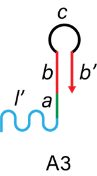

Immune systems protect the human body. One of them is the phagocytosis of macrophages [1]. Phagocytosis is a function that macrophages take to deal with some foreign objects around them. We tried imitating this system in a microscale model using some DNA nanotechnologies: DNA hydrogels and strands. Our system can be applied to gathering foreign objects or bacteria around one specific point.
DNA hydrogel is a three-dimensional network structure made by DNA. It is easy to design structure with DNA strands. Therefore, DNA hydrogels have received considerable attention as one of the structural DNA nanotechnologies. Previous studies show that, by adding DNA initiators, DNA hydrogels can be formed thorough self-assembly process, called the Clamped Hybridization Chain Reaction (C-HCR) [2].
Our final goal is to achieve a target collecting molecular-robot that can be used as man-made immune system. We named our system DNA spider. Like spiders kill harmful insects and protect farm products, our system will get rid of harmful substances in human body and keep us healthy!
Figure 1. The image of the DNA spider.
To collect the target substances, we took three steps: 1. Wrapping the target, 2. Capturing the target and 3. Holding the target, as showed in Figure 2.
Figure 2. The process of collecting the target substances in three steps.
In this experiment, we used DNA hydrogel as the target substance. We designed H1, H2 and I_H strand below. H1 and H2 has a linker region (l in the picture below) to connect DNA arms. First, I_H binds to St1, which is the part of target gel (i’ in I_H and i in St1). Figure 4 shows I_H hybridizes H1 (a, b in H1 and a’, b’ in I_H). Then, H2 binds to H1-I_H complex (c, b’ in H1-I_H complex and c’, b in H2). Alternately, H1 and H2 hybridize this complex and finally the DNA hydrogel are made. Through this self-assembly process, we covered the target with DNA hydrogel.
Figure 3. The structure of H1, H2 and I_H.
Figure 4. The process of initiation.
Figure 5. The process of gel-formation.
The linker region of the DNA arms consists of A3 and A4 as shown in Figure 7. Linker region connects with DNA hydrogel (l in I_H-H1-H2 complex) and catches hydrogel-covered targets.
Figure 6. The structure of A3 and A4.
Figure 7. DNA arms.
To make shrinking region of the DNA arms, we first swelled the DNA arms. The complex of A1 and A2 keeps DNA hairpin structure. Strand C complementary combines A1 and A2 strand, and makes the DNA arms swelled. Adding C’, C and C’ hybridize (z, x, x’, y' in C and z’, x’, x, y in C’), then A1 and A2 strands respectively make DNA hairpin structure. This process makes the DNA arms shrink.
Figure 8. The structure of A1, A2, C and C'.
Figure 9. The mechanism of swelling and shrinking DNA arms.
Through Step1, 2 and 3, we aimed to catch target substances in phagocytosis-like system.
To clarify our progress, we set three phases of our project. Figure 10 shows the level of achievement in each phase.
Figure 10. The flowchart of our project.
Reference
[1] Alan Aderem & David M. Underhill (1999). MECHANISM OF PHAGOCYTOSIS IN MACROPHAGES.
Annual Review of Immunology, 17, 593-623.
[2] Jianbang Wang, Jie Chao, Huajie Liu, Shao Su, Lianhui Wang, Wei Huang, Itamar Willner & Chunhai Fan (2017). Clamped
Hybridization Chain Reactions for the Self-Assembly of Patterned DNA Hydrogels.
Angewandte Chemie, 129(8), 2203-2207.